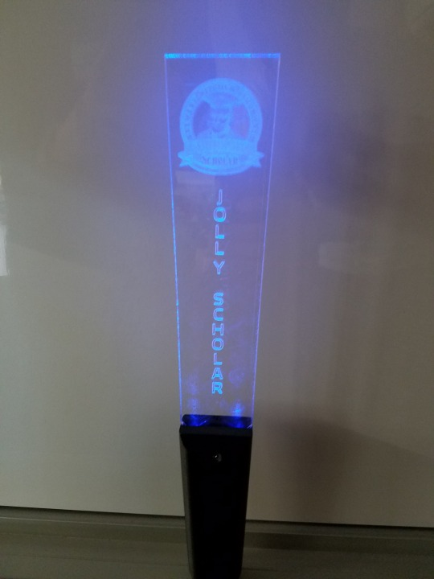
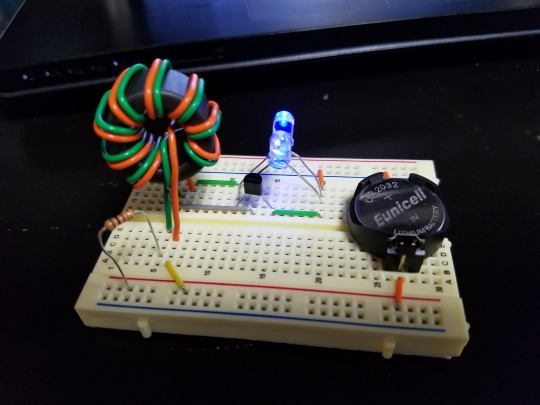
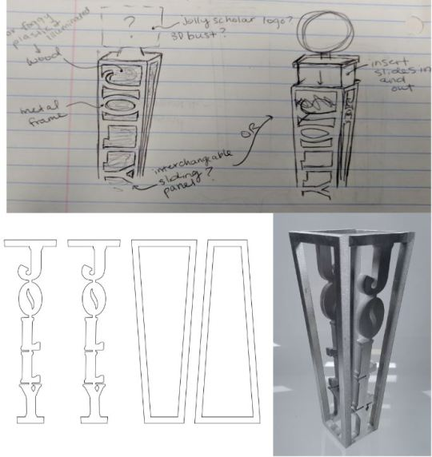
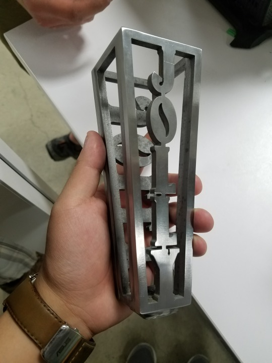
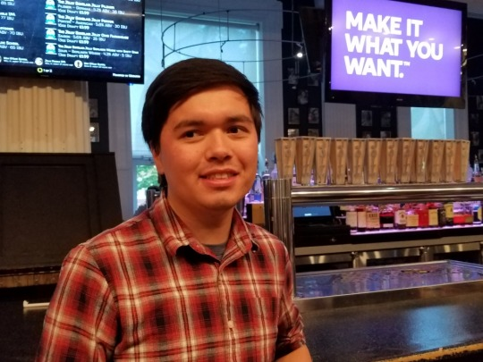

Custom Tap Handle Project
The Jolly Scholar Bar and Grill located on the campus of Case Western Reserve University launched their own microbrewery in early 2017. They plan to exclusively sell their in-house at their bar. For their new beer, they approached several friends and me to create custom tap handles made in-house in CWRU's makerspace think[box]. The Jolly Scholar ordered a initial quantity of 24 tap handles for each of their in-house beer flavors. The team consisted of four mechanical engineering majors and one electrical engineering major (me). We also consulted with several industrial design majors who attended the Cleveland Institute of Art. The project began in March 2017 and was completed in March 2018.
First Iteration

The project team first started the project by meeting with the Jolly Scholar team to figure out the general direction of theme of the tap handle. We determined that we wanted tap handle design to feature what equipment and services think[box] offered to CWRU students and the Cleveland community. For the first design iteration, we decided on a edge-lit acrylic sign with a 3D printed handle. This design would showcase the laser cutters and 3D printers at think[box]. The design also required a lighting system which took into account power consumption.
First Iteration - Electronics

As the lead electronics designer, I was tasked with developing the lighting system for the tap handle. After visiting the Jolly Scholar Bar to see the beer taps, we determined that a external power source would not be feasible to the lack of space in the bar and the risk of water/liquid damage. We decided on a battery powered lighting system. In addition, we wanted to design a low power circuit that would save battery life and thus save the bar money. For designing the circuit, I started by researching ways to save battery life in circuits. Ultimately I choose a joule thief design, which uses a Armstrong oscillator as a voltage booster. This allows the circuit to use nearly all of the energy of a single cell battery, even more than most circuit designs. We tested the circuit and compared the battery life with an ordinary battery powered LED circuit. The joule thief circuit design lasted 96 hours while the control group circuit lasted 30 hours.
First Iteration - Feedback
When we finished the first iteration, we showed our prototype with the Jolly Scholar who tested the tap handle in their bar for a week. Their feedback of the handle was that edge-lit acrylic was not bright enough, especially during the day. They disliked the 'light' aesthetic of the plastic materials and were worried about the fragility of the plastic. Both the project team and the Jolly Scholar team concluded that we needed to completely redesign the tap handle to feature a more 'heavy' aesthetic and used more sturdy materials.
Second Iteration
 
For the redesign, we started by consulting with several industrial design majors at the Cleveland Institute of Art. They assisted by pitching ideas and insight from an artist perspective and drawing drafts of ideas from our designing meetings. They also led exercises to help us understand the physical aesthetics of the materials we were using. These insights allowed us to design a new tap handle that gave a heavy and sturdy feel to people viewing the handle. The second and final design iteration consists of four quarter inch thick aluminum sides with a wood core. As the new design no longer had electronics, my role transitioned from the electronics lead to woodworking lead. The aluminum sides were manufactured by waterjet cutting an aluminum sheet and the aluminum pieces were welded together. The wood cores were cut out of wood block using the equipment of the wood shop at think[box].
Final Product

After building the first prototype of the new design, we met with the Jolly Scholar team who approved the new design for manufacturing. We manufactured 12 out of the 24 units order in February of 2018 and delivered the 12 to the bar as production samples. The bar ran a test run with one of the handles for two weeks which both bartenders and bar patrons gave positive feedback. We finished manufacturing and delivered the rest of the tap handles in March. As of February 2019, the Jolly Scholar is using the Jolly tap handles for all 24 of their taps.
A special thank you to my team partners: Celena Hsiung, Richard Offhaus IV, Alex Shimek, Gavin Markowitz, and Ray Krajci